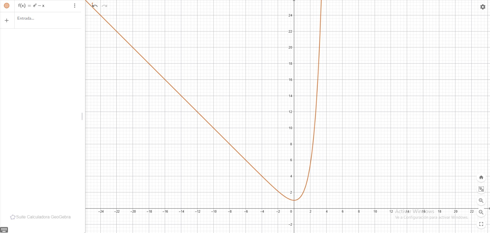
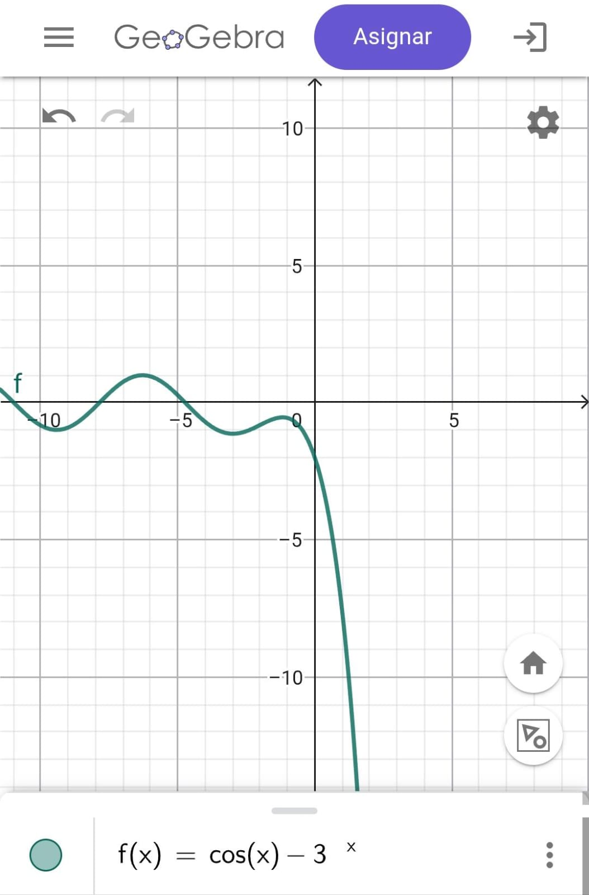
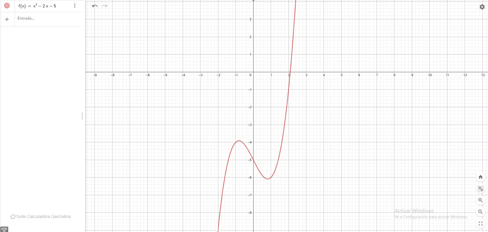
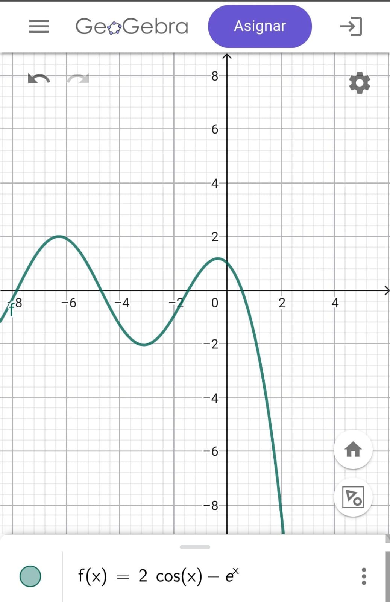
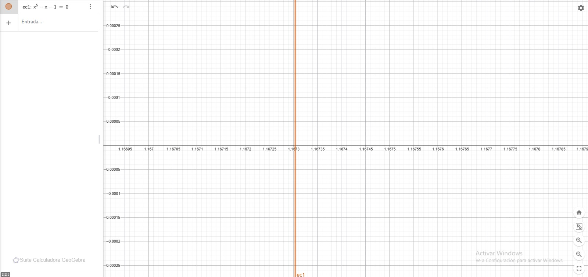
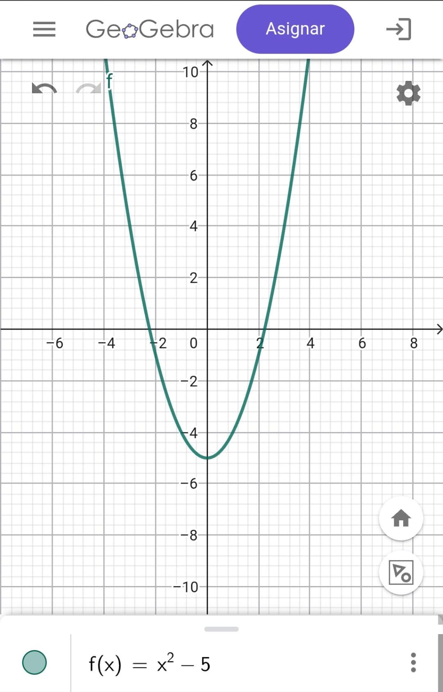
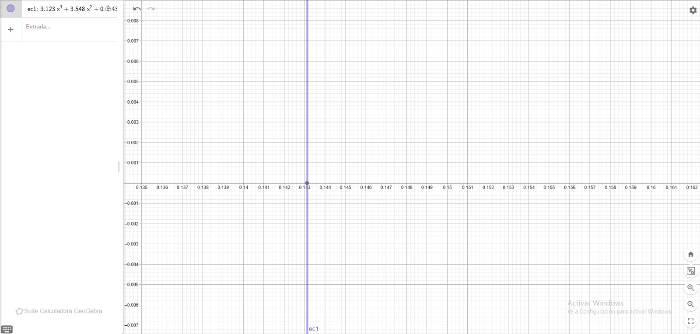
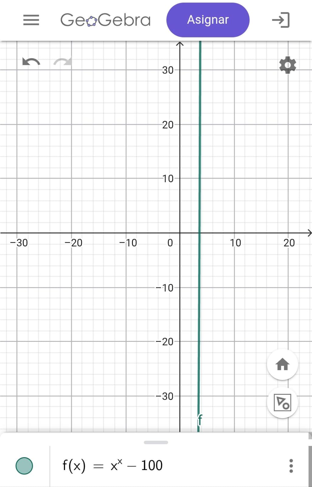
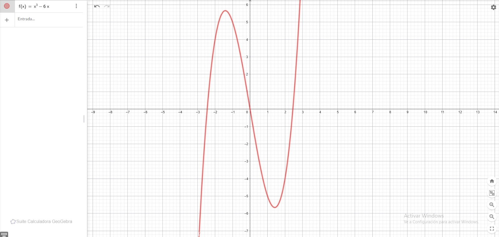
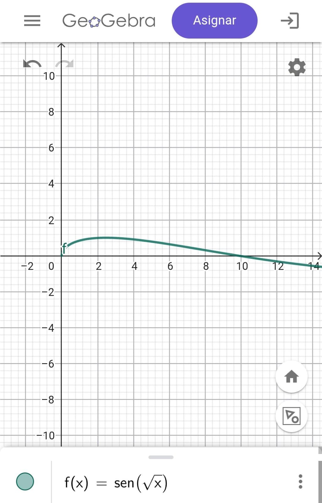

MÉTODOS NUMÉRICOS
Ejercicios por Método de Newton-Rhapson
Aplicación del método de Newton para encontrar
aproximaciones de raíces.
Ejercicio 1
Aplicar el método de Newton para establecer
una aproximación de la raíz de:
f(x) = e-x-x
Valor inicial: x0 = 0
Error: E a = 0.01
Fórmula / Derivada
f'(x) = - (1 + ex) / ex
Tabla de iteraciones
| n |
xn |
f(xn) |
| 1 |
0.5 |
0.1065 |
| 2 |
0.5663 |
1.3217 × 10-3 |
| 3 |
0.5671 |
6.7842 × 10-5 |
| 4 |
0.56714 |
5.1565 × 10-6 |
Conclusión:
La aproximación obtenida en la última iteración
es x ≈ 0.5203.
Gráfica de la función:

Ejercicio 2
Emplear Newton - Raphson para establecer
una aproximación de la raíz de:
f(x) = 2 cos(x) - ex = 0
Valor inicial: x0 = 0.5
Fórmula de iteración
xn+1 = xn - [ (2 cos(x) - ex) / (-2 sen(x) - ex) ]
Tabla de iteraciones
| Valores de X |
Valores de Y |
| 0.5 |
0.5408210546 |
| 0.5408210546 |
0.5397858311 |
| 0.5397858311 |
0.5397851608 |
| 0.5397851608 |
0.5397851608 |
Conclusión:
La aproximación obtenida en la última iteración es x = 0.5397851608.
Gráfica de la función:

Ejercicio 3
Aplicar el método de Newton para establecer
una aproximación de la raíz (hasta que converga) de:
f(x) = x3 - 2x - 5
Valor inicial: x0 = 2
Fórmula / Derivada
f'(x) = 3x2 - 2
xn+1 = xn - [ (xn3 - 2xn - 5) / (3xn2 - 2) ]
Tabla de iteraciones
| n |
xn |
| 0 |
2 |
| 1 |
2.1 |
| 2 |
2.09456 |
| 3 |
2.09455 |
| 4 |
2.09455 |
Conclusión:
La aproximación obtenida al converger el método es x = 2.09455.
Gráfica de la función:

Ejercicio 4
Emplear Newton - Raphson para:
f(x) = x2 - 5
Valor inicial: x0 = 4
Fórmula de iteración
xn+1 = xn - [ (xn2 - 5) / (2xn) ]
Tabla de iteraciones
| Valores de X |
Valores de Y |
| 4 |
2.625 |
| 2.625 |
2.264880952 |
| 2.264880952 |
2.236251251 |
| 2.236067985 |
2.236067977 |
| 2.236067977 |
2.236067977 |
Conclusión:
La aproximación obtenida para √5 en la última iteración es x = 2.236067977.
Gráfica de la función:

Ejercicio 5
Aplicar el método de Newton para establecer
una aproximación de la raíz (convergencia con 8 dígitos) de:
f(x) = x5 - x - 1 = 0
Valor inicial: x0 = 1
Fórmula / Derivada
f'(x) = 5x4 - 1
xn+1 = xn - [ (xn5 - xn - 1) / (5xn4 - 1) ]
Tabla de iteraciones
| n |
xn |
| 0 |
1 |
| 1 |
1.25 |
| 2 |
1.17845939 |
| 3 |
1.16753738 |
| 4 |
1.16730408 |
Conclusión:
La aproximación obtenida con convergencia de 8 dígitos es x = 1.16730408.
Gráfica de la función:

Ejercicio 6
Emplear Newton - Raphson para establecer
una aproximación de la raíz de:
f(x) = cos(x) - 3ex
Valor inicial: x0 = -4
Fórmula de iteración
xn+1 = xn - [ (cos(x) - 3ex) / (-sen(x) - 3ex) ]
Tabla de iteraciones
| Valores de X |
Valores de Y |
| -4 |
-4.872917833 |
| -4.872917833 |
-4.737398765 |
| -4.737398765 |
-4.738643482 |
| -4.738643482 |
-4.738643521 |
| -4.738643521 |
-4.738643521 |
Conclusión:
La aproximación obtenida en la última iteración es x = -4.738643521.
Gráfica de la función:

Ejercicio 7
Aplicar el método de Newton-Raphson para obtener
una aproximación de la raíz de la función:
f(x) = 3.1230x3 + 3.5480x2 + 0.0543x - 0.0896 = 0
Valor inicial: x0 = 0.0666
Fórmula / Derivada
f'(x) = 3(3.1230x2) + 2(3.5480x) + 0.0543
f'(x) = 9.3690x2 + 7.0960x + 0.0543
xn+1 = xn - [ (3.1230xn3 + 3.5480xn2 + 0.0543xn - 0.0896) / (9.3690xn2 + 7.0960xn + 0.0543) ]
Tabla de iteraciones
| n |
xn |
| 0 |
0.0666 |
| 1 |
0.1885 |
| 2 |
0.1492 |
| 3 |
0.1432 |
Conclusión:
La aproximación obtenida al cabo de la tercera iteración es x = 0.1432.
Gráfica de la función:

Ejercicio 8
Emplear Newton - Raphson para establecer
una aproximación de la raíz de:
f(x) = xx - 100
Valor inicial: x0 = 3.4
Fórmula de iteración
xn+1 = xn - [ (xnxn - 100) / (xnxn (ln(xn) + 1)) ]
Tabla de iteraciones
| Valores de X |
Valores de Y |
| 3.4 |
3.651577029 |
| 3.651577029 |
3.600687479 |
| 3.600687479 |
3.597298893 |
| 3.597298893 |
3.597285024 |
| 3.597285024 |
3.597285024 |
Conclusión:
La aproximación obtenida en la última iteración es x = 3.597285024.
Gráfica de la función:

Ejercicio 9
Aplicar el método de Newton - Raphson para encontrar las aproximaciones
de las raíces de la función dada tres condiciones iniciales distintas:
f(x) = x3 - 6x
Fórmula / Derivada
f'(x) = 3x2 - 6
xn+1 = xn - [ (xn3 - 6xn) / (3xn2 - 6) ]
a) Valor inicial: x0 = 5
| n |
xn |
| 0 |
5 |
| 1 |
3.6231 |
| 2 |
2.8495 |
| 3 |
2.5205 |
| 4 |
2.4523 |
| 5 |
2.4494 |
Conclusión a):
La aproximación obtenida para x0 = 5 es x ≈ 2.4494.
b) Valor inicial: x0 = -5
| n |
xn |
| 0 |
-5 |
| 1 |
-3.6231 |
| 2 |
-2.8495 |
| 3 |
-2.5205 |
| 4 |
-2.4523 |
| 5 |
-2.4494 |
Conclusión b):
La aproximación obtenida para x0 = -5 es x ≈ -2.4494.
c) Valor inicial: x0 = 1
| n |
xn |
| 0 |
1 |
| 1 |
-0.6666 |
| 2 |
0.1269 |
| 3 |
-0.0006867 |
| 4 |
0 |
Conclusión c):
La aproximación obtenida para x0 = 1 es x = 0.
Gráfica de la función

Ejercicio 10
Emplear el método de Newton - Raphson para establecer
una aproximación de la raíz de la función:
f(x) = sen(√x)
Valor inicial: x0 = 9.5
Fórmula de iteración
xn+1 = xn - [ sen(√xn) / ( cos(√xn) / (2√xn) ) ]
Tabla de iteraciones
| Valores de X |
Valores de Y |
| 9.5 |
9.866508697 |
| 9.869604159 |
9.869604401 |
| 9.869604401 |
9.869604401 |
Conclusión:
La aproximación obtenida en la última iteración es x = 9.869604401.
Gráfica de la función
